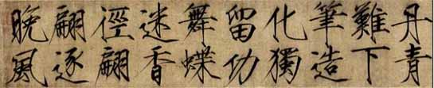

Trang chủ
Trang chủ
Thư pháp 書 法 là nghệ thuật viết chữ của người Trung Quốc với các công cụ gọi là văn phòng tứ bảo 文 房 四 寶(bút, nghiên, giấy, mực). Người Trung Quốc thường nói: «Học tập thư pháp khả dĩ tu thân, dưỡng tính, đào dã tâm tình.» 學習書法可以修身養性陶冶心情 (học tập thư pháp có thể tu thân dưỡng tính, uốn nắn tình cảm). Với quan niệm này, thư pháp cũng là Đạo (Thư pháp giả, Đạo dã) 書 法者道也. Người Nhật từ thuở tiếp thu văn hóa Hán đã nhận ra giá trị cao nhã của thư pháp nên gọi tên là thư đạo 書道 (shōdō). Không những thế, sự nghiên tập thư pháp từ đời Hán đến nay đã trở thành môn học hẳn hoi với đầy đủ cơ sở lý luận gọi là thư học 書學. Nói đến thư pháp là nói đến khổ luyện. Người Trung Quốc thường bảo: «Học thư vô nhật bất lâm trì.» 學書無日不臨池 (Học thư pháp chẳng ngày nào mà không «vào ao»). Thuật ngữ lâm trì ý nói công phu khổ luyện thư pháp. Thư gia Trương Chi 張芝 đời Đông Hán mỗi ngày luyện viết xong thì rửa bút ở ao, lâu ngày nước đen như mực (Lâm trì học thư, trì thủy tận mặc) 臨池學書池水盡墨. Thuật ngữ lâm trì bắt nguồn từ đó. Thời của Trương Chi, giấy chưa phổ biến, luyện chữ chỉ có thể viết trên tơ lụa. Ông tận dụng tất cả vải lụa trong nhà, khi không thể viết thêm được nữa thì đem nhuộm và may y phục. Giới nghiên cứu Trung Quốc tổng kết rằng các đại thư gia thường phải mất vài chục năm lâm trì mới thành danh. Vì bái phục công phu lâm trì của Trương Chi (đời Hán) nên Vương Hi Chi 王羲之(đời Tấn) đã bỏ ra 15 năm luyện chữ, bắt đầu từ chữ vĩnh 永 (mãi mãi). Chữ vĩnh bao quát tám nét cơ bản của chữ Hán (gọi là vĩnh tự bát pháp 永字八法 ) và là bài tập nền tảng cho người mới học thư pháp. Nhưng vĩnh tự bát pháp chính thức được nghiên cứu có qui củ kể từ nhà sư Thích Trí Vĩnh 釋智永 (tục gọi Vĩnh thiền sư) đời Tuỳ. Vị cháu bảy đời này của Vương Hi Chi cũng là một tấm gương khổ luyện thư pháp. Ông tu ở chùa Vĩnh Hân 永欣, huyện Ngô Hưng 吳興. Ông lên lầu chùa rồi không xuống, ở đó 40 năm khổ luyện thư pháp (Đăng lâu bất hạ tứ thập niên 登樓不下四十年). Bút cùn (thoái bút 退筆) vất thành gò. Khi ông thành danh, người người đến xin chữ khiến ngạch cửa bị dẫm nát, phải lấy sắt lá bao lại (gọi là thiết môn hạn 鐵門限). Nhà sư Hoài Tố 懷素 đời Đường thuở hoa niên nhà nghèo không tiền mua giấy, chỉ khổ luyện trên lá chuối mà thành danh thảo thánh 草聖. Vương Hiến Chi 王獻之 thuở nhỏ luyện chữ đã gánh nước đổ đầy 18 chum để làm nước mài mực. Nhờ thế mà thành danh. Hai cha con Vương Hi Chi và Vương Hiến Chi được đời xưng tụng là Thảo thánh nhị Vương 草聖二王. Chữ thảo của họ trở thành khuôn mẫu cho thế nhân nghiên tập từ đời Tấn đến nay.
Thư thể Sấu Kim đặc trưng của Triệu Cát (tức vua Tống Huy Tông)
Những người say đắm thư pháp nhiều vô kể. Mỗi một đời đều có một số đại thư gia, từ vua chúa đến sĩ dân. Đường Thái Tông 唐太宗 (Lý Thế Dân 李世民) lúc rỗi lấy ngón tay viết chữ trong không khí (trừu không luyện tự 抽空練字); nửa đêm tốc dậy thắp đuốc luyện Lan Đình 蘭亭 (mặc tích của Vương Hi Chi). Lương Vũ Đế 梁武帝 cực kỳ hâm mộ mặc tích của họ Vương, cho người đi sưu tầm tất cả tác phẩm của Vương Hi Chi, truyền lệnh cho mọi người trong cung phủ phải lấy các thư thể của họ Vương làm chuẩn, rồi sai Chu Hưng Tự 周興嗣 soạn Thiên Tự Văn 千字文 và cho người mô phỏng bốn thư thể chân, thảo, lệ, triện của họ Vương mà chép Thiên Tự Văn để dạy chữ Hán và thư pháp cho các con em trong cung phủ. Chu Hưng Tự là văn quan kỳ tài, chỉ dùng 1000 chữ Hán cơ bản viết thành từng câu bốn chữ (không chữ nào lập lại) mà giảng giải được mọi lý lẽ trên đời. Tác phẩm nổi tiếng này không chỉ là sách giáo khoa khải mông (dạy trẻ) từ đời Lương đến đời Thanh mà còn là bí kíp rèn luyện thư pháp cực kỳ quan trọng cho đến ngày nay. Trí Vĩnh thiền sư sao chép 800 bản Thiên Tự Văn theo chữ hành và chữ thảo phổ biến cho các tự viện. Các thư gia đều có bản Thiên Tự Văn với thư thể của riêng mình, như Âu Dương Tuân 歐陽詢 đời Đường, Triệu Mạnh Phủ 趙孟頫 đời Nguyên, v.v... cho đến các thư pháp gia Trung Quốc hiện đại. Lịch sử phát triển của thư pháp xuôi theo lịch sử phát triển của chữ Hán. Các thư gia Trung Quốc nhiều vô kể, mỗi người chuyên trị một thư thể, có người vừa là thư gia vừa là họa gia; nếu liệt kê đầy đủ phải là một danh sách dài dằng dặc. Ta chỉ có thể kể những đại thư gia tiêu biểu nhất của từng đời. Bắt đầu từ đời Tần Thủy Hoàng Đế 秦始皇帝 có thừa tướng Lý Tư 李斯 (người thống nhất văn tự Trung Quốc, được thư pháp sử 書法史 kể là đệ nhất thư pháp gia), Triệu Cao 趙高 , Hồ Mẫu Kính 胡母敬 ,... Đời Hán có các thư gia Sử Du 史游 , Tào Hỉ 曹喜, Thôi Viện 崔瑗 , Trương Chi 張芝, Sái Ung 蔡邕, Lương Hộc 梁鵠, Lưu Đức Thăng 劉德升,... Đời Tam Quốc và Tây Tấn có Hàm Đan Thuần 邯鄲淳, Vỹ Đản 偉誕, Chung Diêu 鐘繇, Hoàng Tượng 皇象, Vệ Ký 衛覬, Vệ Cẩn 衛瑾 (con Vệ Ký), anh em Vệ Hằng 衛恆- Vệ Tuyên 衛宣 - Vệ Đình 衛庭 (các con của Vệ Cẩn), Tố Tĩnh 素靖 (cháu gọi Trương Chi là cậu), Lục Cơ 陸機,... Đời Đông Tấn có gia đình Vương Hi Chi 王羲之 với các con Vương Hiến Chi 王獻之, Vương Tuần 王珣 , Vương Dân 王民. Đời Nam Bắc Triều có Bạc Thiệu Chi 薄紹之, Vương Tăng Kiền 王僧虔, Đào Hoằng Cảnh 陶弘景 (cũng là Đạo gia), Trịnh Đạo Chiêu 鄭道昭, Triệu Văn Thâm 趙文深, Vương Bao 王褒 , ... Đời Tùy và Đường là thời kỳ đỉnh thịnh của thư pháp với các thư gia Trí Vĩnh 智永 (thiền sư Thích Trí Vĩnh), Thích Trí Quả 釋智果, Đinh Đạo Hộ 丁道護, Âu Dương Tuân 歐陽詢, Ngu Thế Nam 虞世南, Chử Toại Lương 褚遂良, Lục Giản Chi 陸柬之, Lý Thế Dân 李世民 (Đường Thái Tông 唐太宗), Vũ Tắc Thiên 武則天 (vốn là tài nhân của Thái Tông, về sau bà lên ngôi xưng là Đại Thánh Hoàng Đế 大聖皇帝, thư pháp chuyên về hành thư), Tiết Tắc 薛稷, Tôn Kiền Lễ 孫虔禮, Kính Khách 敬客, Hạ Tri Chương 賀知章, Lý Ung 李邕, Trương Húc 張旭, Hàn Trạch Mộc 韓擇木, Trương Hoài Cẩn 張懷瑾, Nhan Chân Khanh 顏真卿, Hoài Tố 懷素, Từ Hạo 徐浩, Lý Dương Băng 李陽冰, Liễu Công Quyền 柳公權, Đỗ Mục 杜牧, Cao Nhàn 高閑, ...
 Trang chủ
Trang chủ You Tube
You Tube Facebook
Facebook Twitter
Twitter